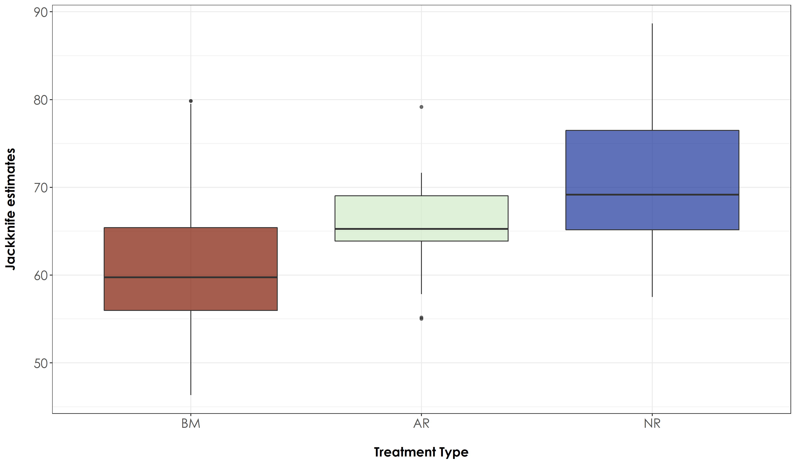
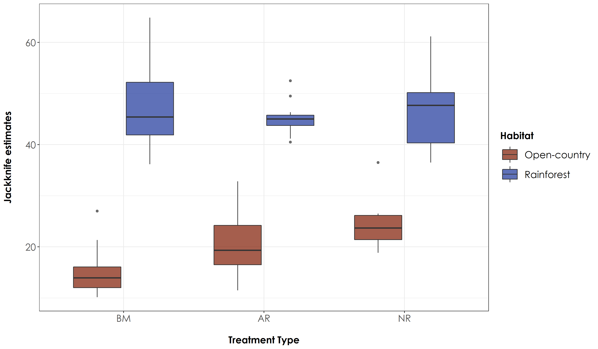

Section 12 Jackknife estimates
In this script, we will extract jackknife scores, which essentially extrapolates species richness for a given species pool. This calculation is based on the number of sites and the number of visits to each site and the number of singletons/doubletons (detecting a species only once/site and twice/site respectively).
12.0.2 Load the necessary data to calculate Jackknife scores
# We load the subset data
datSubset <- read.csv("results/datSubset.csv")
# Load species-trait data to essentially check for associations by habitat type
trait_dat <- read.csv("data/species-trait-dat.csv")
# Site-summary (Number of detections across all sites)
datSummary <- datSubset %>%
group_by(Site, Restoration.type) %>%
transform() %>% replace(is.na(.), 0) %>%
summarise_at(.vars = vars(c("IP":"HSWP")),.funs = sum)12.0.3 Preparing dataframe to extract jacknife scores
# Calculate the overall number of detections for each site across 6 days of data (translates to ~96-min of data per site; each detection corresponding to a temporal unit of 10 seconds). Here, we include dates, since each visit can explain the extrapolation of species richness when jackknife estimates are extracted.
nDetections_site_date <- datSubset %>%
group_by(Site, Restoration.type, Date) %>%
transform() %>% replace(is.na(.), 0) %>%
summarise_at(.vars = vars(c("IP":"HSWP")),.funs = sum)
# Combine the nDetections and trait based data to obtain a dataframe for jackknife estimates
nDetections_trait <- nDetections_site_date %>%
pivot_longer(cols=IP:HSWP, names_to="Species_Code", values_to="count") %>%
left_join(.,trait_dat, by=c("Species_Code"="species_annotation_codes")) %>%
mutate(forRichness = case_when(count>0 ~ 1,count==0 ~ 0)) %>%
rename(., nDetections = count)
# Extract jackknife scores
# To do the same, we first prepare the dataframe in a manner where we have a matrix of Site by Date by Species name
jacknifeAll <- nDetections_trait %>%
dplyr::select(Site, Date, Species_Code, nDetections, Restoration.type) %>%
group_by(Site, Date, Restoration.type, Species_Code) %>%
summarise(totDetections = sum(nDetections)) %>%
pivot_wider(names_from = Species_Code, values_from = totDetections, values_fill = list(totDetections=0))
# Prepare a dataframe of rainforest species for jacknifing
jacknife_rainForest <- nDetections_trait %>%
filter(habitat=="RF") %>%
dplyr::select(Site, Date, Species_Code, nDetections, Restoration.type) %>%
group_by(Site, Date, Restoration.type, Species_Code) %>%
summarise(totDetections = sum(nDetections)) %>%
pivot_wider(names_from = Species_Code, values_from = totDetections, values_fill = list(totDetections=0))
# Prepare a dataframe of open-country species for jacknifing
jacknife_openCountry <- nDetections_trait %>%
filter(habitat=="OC") %>%
dplyr::select(Site, Date, Species_Code, nDetections, Restoration.type) %>%
group_by(Site, Date, Restoration.type, Species_Code) %>%
summarise(totDetections = sum(nDetections)) %>%
pivot_wider(names_from = Species_Code, values_from = totDetections, values_fill = list(totDetections=0))12.0.4 Save scores locally
jackAllScore <- specpool(jacknifeAll[,4:ncol(jacknifeAll)],
pool = jacknifeAll$Site) %>%
rownames_to_column("Site") %>%
add_column (Restoration.type = datSummary$Restoration.type)
# write out results
write.csv(jackAllScore, "data/jackAll.csv", row.names=F)
jack_rainForestScore <- specpool(jacknife_rainForest[,4:ncol(jacknife_rainForest)],
pool = jacknife_rainForest$Site) %>%
rownames_to_column("Site") %>%
add_column (Restoration.type = datSummary$Restoration.type) %>%
mutate(Habitat = "RF")
# write out results
write.csv(jack_rainForestScore,"data/jackRainforest.csv", row.names = F)
jack_openCountryScore <-specpool(jacknife_openCountry[,4:ncol(jacknife_openCountry)],
pool = jacknife_openCountry$Site) %>%
rownames_to_column("Site") %>%
add_column (Restoration.type = datSummary$Restoration.type) %>%
mutate(Habitat = "OC")
# write out results
write.csv(jack_openCountryScore, "data/jackOpencountry.csv", row.names = F)12.0.6 Testing for differences between treatment types
Plotting jacknife estimates and testing for any significant differences between treatment types
# Test if there are significant differences in jacknife estimates across treatment types
anovaJackAll <- aov(jack1~Restoration.type, data = jackAllScore)
# Tukey test to study each pair of treatment - reveals no signficant difference across treatment types
tukeyJackAll <- TukeyHSD(anovaJackAll)
# The above result suggests that there is no significant different in jacknife scores between treatment types
# Create a boxplot of jacknife estimates by group (Here: group refers to Restoration Type)
# reordering factors for plotting
jackAllScore$Restoration.type <- factor(jackAllScore$Restoration.type, levels = c("Benchmark", "Active", "Passive"))
# Add a custom set of colors
mycolors <- c(brewer.pal(name="Dark2", n = 3), brewer.pal(name="Paired", n = 3))
fig_jackAll <- ggplot(jackAllScore, aes(x=Restoration.type, y=jack1, fill=Restoration.type)) + geom_boxplot(alpha=0.7) +
scale_fill_manual("Treatment type",values=mycolors, labels=c("BM","AR","NR"))+
theme_bw() +
labs(x="\nTreatment Type",
y="Jackknife estimates\n") +
scale_x_discrete(labels = c('BM','AR','NR')) +
theme(axis.title = element_text(family = "Century Gothic",
size = 14, face = "bold"),
axis.text = element_text(family="Century Gothic",size = 14),
legend.position = "none")
ggsave(fig_jackAll, filename = "figs/fig_jackAll.png", width=12, height=7,
device = png(), units="in", dpi = 300); dev.off() ### Jacknife scores by species traits
Let’s test for significant differences in jacknife estimates as a function of species trait
anovaJack_rainForest <- aov(jack1~Restoration.type, data = jack_rainForestScore)
anovaJack_openCountry <- aov(jack1~Restoration.type, data = jack_openCountryScore)
# Tukey test to study each pair of treatment
tukeyJack_rainForest <- TukeyHSD(anovaJack_rainForest)
tukeyJack_openCountry <- TukeyHSD(anovaJack_openCountry)
# For rainforest species - there is no significant difference in jacknife estimates between any treatment types, while for open-country birds; there is a significant difference in jacknife estimates across active-benchmark and passive-benchmark
# Plot the above results
jackTrait <- bind_rows(jack_rainForestScore, jack_openCountryScore)
# reordering factors for plotting
jackTrait$Restoration.type <- factor(jackTrait$Restoration.type, levels = c("Benchmark", "Active", "Passive"))
# Rainforest species
fig_jackTrait <- ggplot(jackTrait, aes(x=Restoration.type, y=jack1, fill=Habitat)) +
geom_boxplot(alpha=0.7) +
scale_fill_scico_d(palette = "roma",
labels=c("Open-country","Rainforest")) +
theme_bw() +
labs(x="\nTreatment Type",
y="Jackknife estimates\n") +
scale_x_discrete(labels = c('BM','AR','NR')) +
theme(axis.title = element_text(family="Century Gothic",
size = 14, face = "bold"),
axis.text = element_text(family="Century Gothic",size = 14),
legend.title = element_text(family="Century Gothic",
size = 14, face = "bold"),
legend.key.size = unit(1,"cm"),
legend.text = element_text(family="Century Gothic",size = 14))
ggsave(fig_jackTrait, filename = "figs/fig_jackTrait.png", width=12, height=7,device = png(), units="in", dpi = 300); dev.off()
# Please note that this figure is required to create the Fig 4a in the next script.

No significant differences were observed for rainforest bird species across treatment types but the jacknife estimates of open-country bird species varied between BM-NR and BM-AR site pairs.